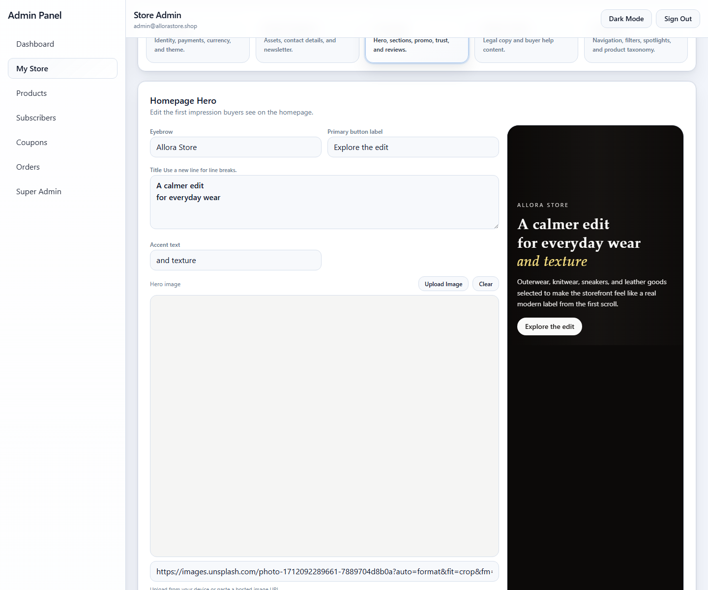
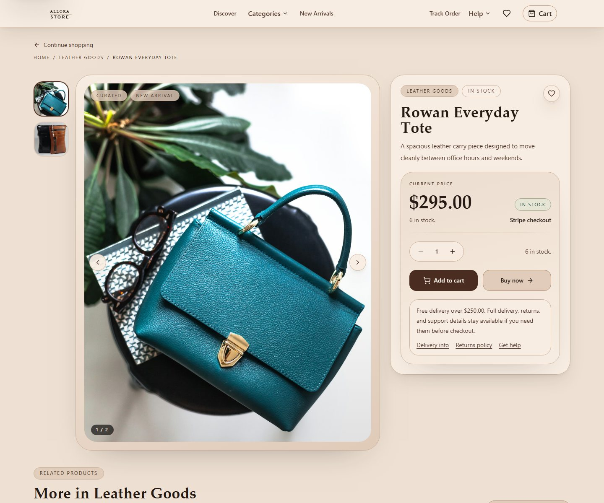
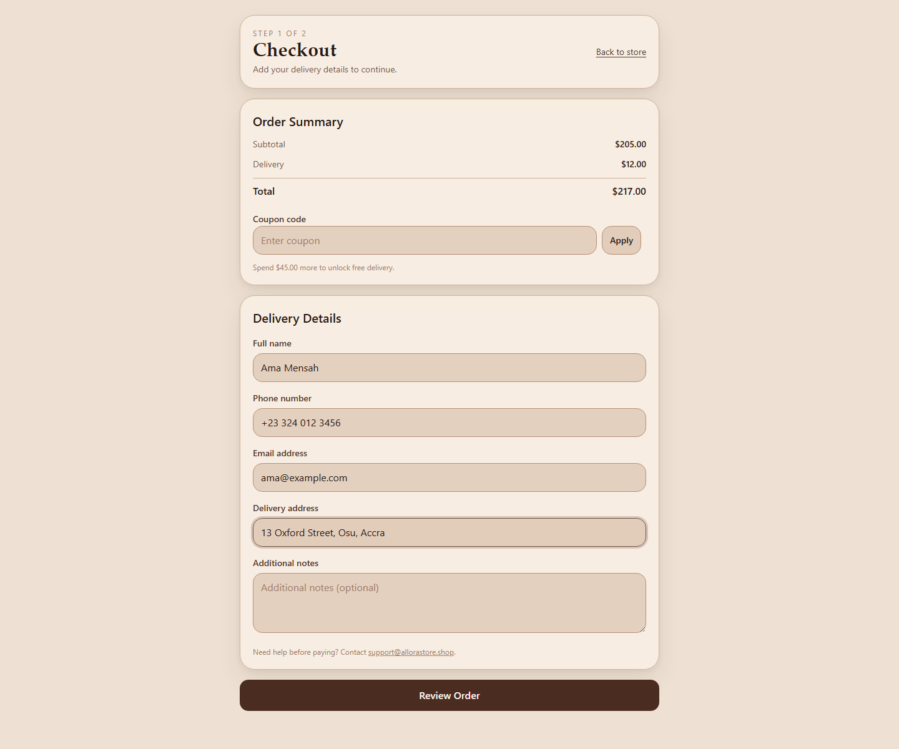
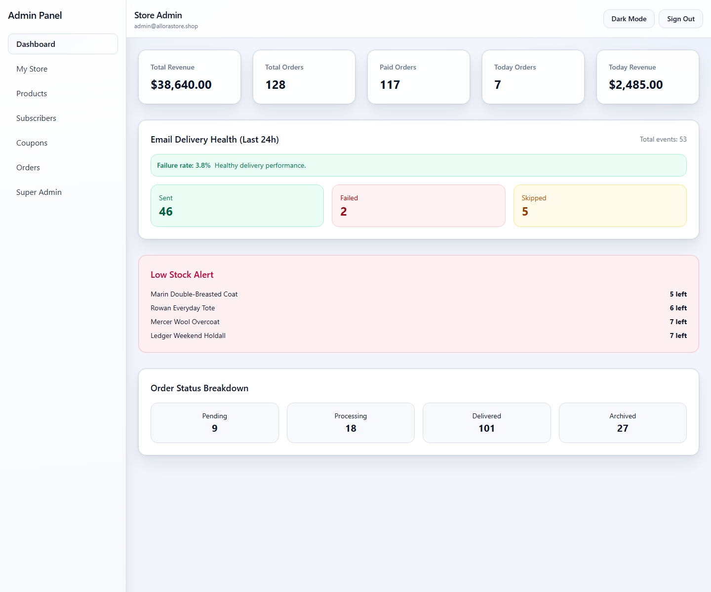
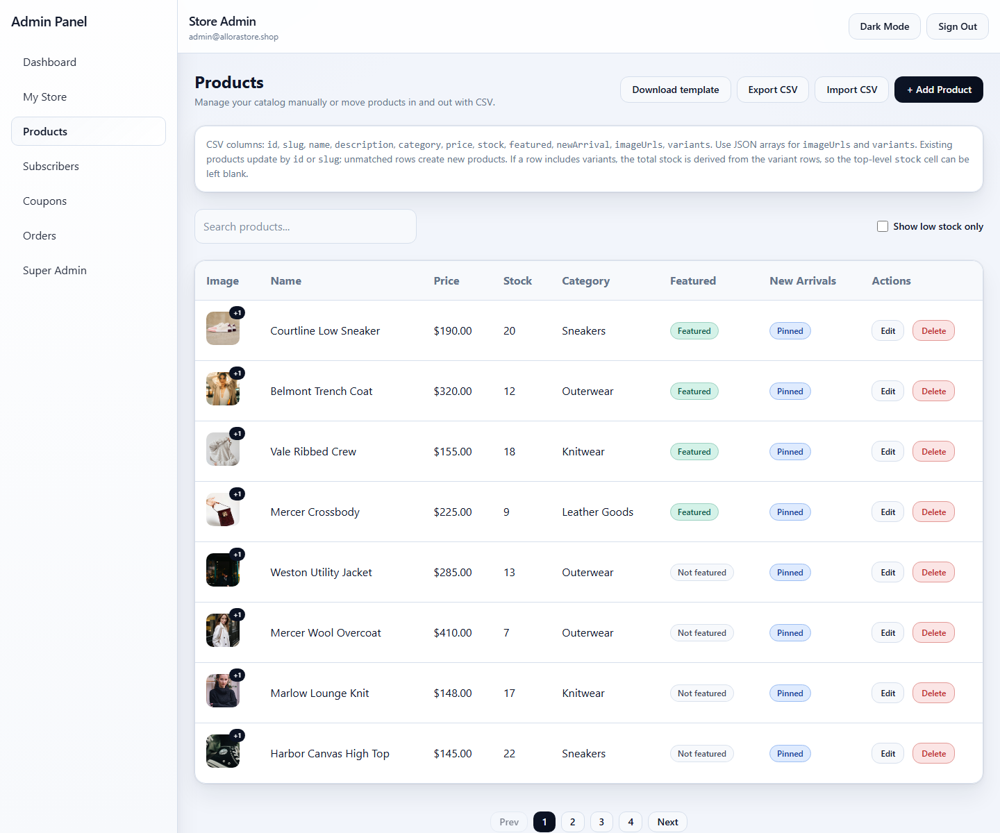
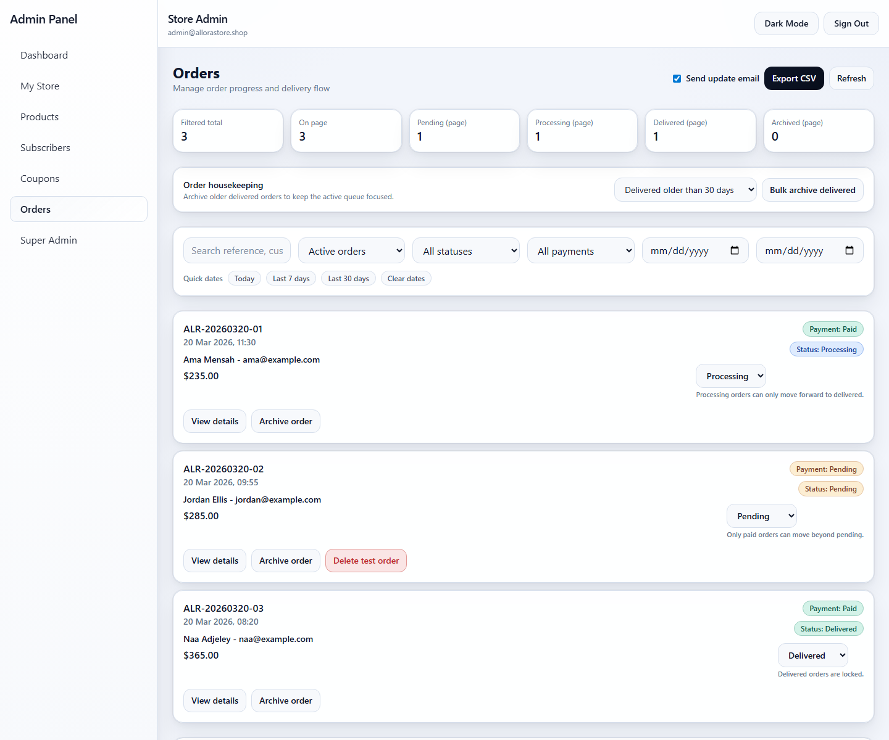
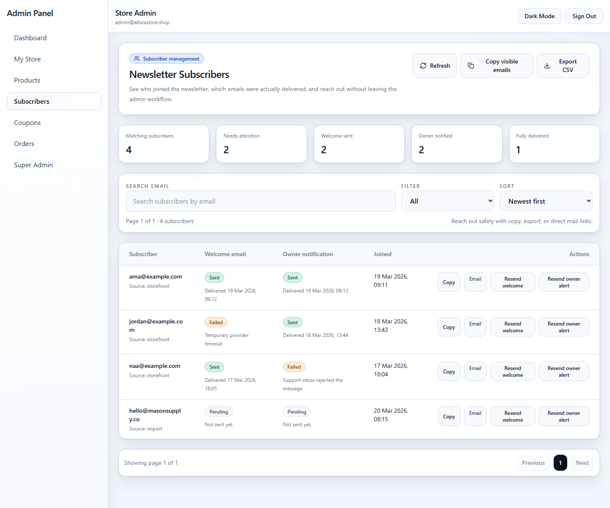

Ecommerce system
Allora Store
A premium single store ecommerce build with a polished storefront and a serious admin layer behind it.
The storefront is only one side of the product. Behind it sits a control center for branding, homepage sections, products, orders, subscribers, coupons, policies, analytics, and payment setup, so routine updates do not need to turn into developer tasks.
- Acquisition ready
- Stripe + Paystack
- Storefront + Admin


My Store
Branding, hero content, categories, policies, trust sections, and support details are managed from one admin surface.
Overview
Made to feel refined on the front and practical behind the scenes.
Allora Store is built around the kind of commerce flow that needs more than a good looking landing page. The public experience includes real product detail pages, variant based selection, search, category browsing, new arrivals, wishlist behavior, checkout, order tracking, and support pages.
The admin mirrors that seriousness. Store owners can manage catalog structure, homepage merchandising, operational settings, customer communication, and payment readiness from a usable backend, not a decorative dashboard.
Storefront
Built to browse and convert
Responsive homepage sections, category flow, search, related products, saved items, checkout, and order tracking.
Product model
Variant driven by design
Multiple images, option switching, stock aware cart behavior, variant image mapping, and search friendly product URLs.
Operations
Admin for day to day control
Orders, coupons, subscribers, homepage edits, policy content, support details, and catalog imports all live inside the app.
Delivery
Ready for real deployment
Stripe and Paystack support, email flows, analytics hooks, SEO metadata, structured data, sitemap, and production checks.
Storefront
The public facing side is complete, not staged.
The experience covers homepage merchandising, real product detail flow, and checkout rather than stopping at visual mockups.


Customer journey
Homepage, category browsing, product detail, cart, checkout, order tracking, FAQ, help, and policy pages.
Product experience
Multiple gallery images, related products, variant aware stock behavior, and mobile ready product flow.
Merchandising
Featured sections, new arrivals, promo banners, trust blocks, testimonials, newsletter, and brand rail management.
Admin
A real control layer behind the storefront.
The admin side is built for actual store ownership, not just presentation. Routine store updates can stay inside the system: branding, homepage sections, product management, support details, policies, categories, coupons, order handling, and subscriber operations.
The My Store area acts as the main control center, while products, orders, subscribers, and super admin tasks each have their own working surface.
My Store
Hero content, promo sections, support details, categories, FAQ, policies, analytics IDs, trust blocks, and brand rail.
Products
Create, edit, delete, upload images, assign variants, and move catalog data in or out with CSV.
Orders and subscribers
Filter and update orders, resend emails, archive delivered orders, export subscribers, and handle delivery status visibility.




Foundation
Operational depth, not just storefront polish.
- Stripe Checkout Sessions and Paystack support with payment readiness checks
- Resend powered emails for orders, subscribers, welcome flows, and owner notifications
- GA4 and Meta Pixel support with consent based analytics initialization
- Canonical tags, Open Graph, structured data, robots.txt, and sitemap.xml
- Responsive image delivery, accessibility improvements, reduced motion handling, and Playwright coverage
Project page
The storefront shows the customer side. This page shows the system behind it.
If you want to see the live experience, open the storefront. If you want to understand the value of the build, the admin and operations layer is the part doing the heavier work.